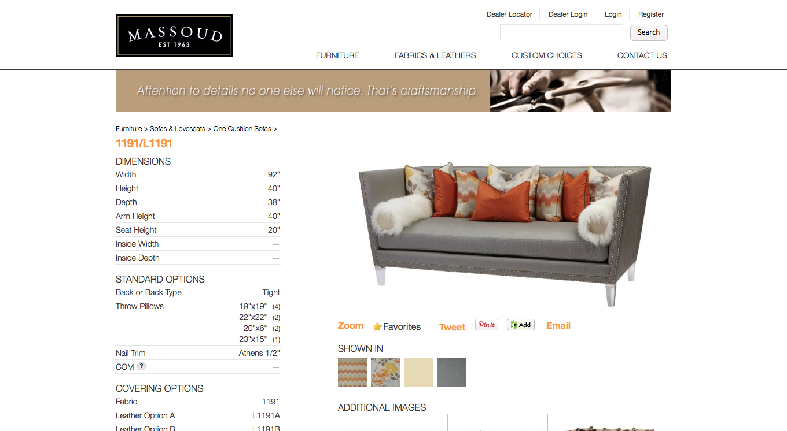
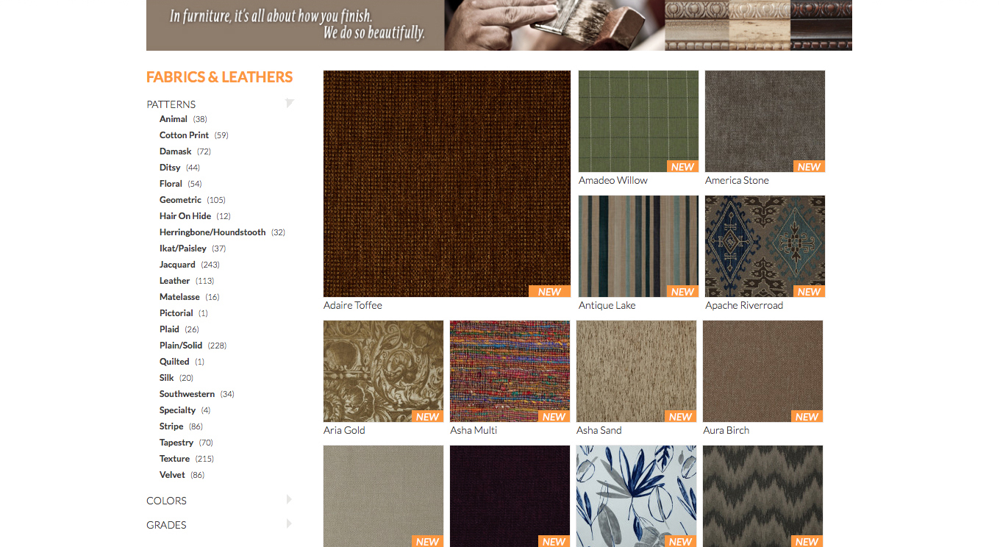
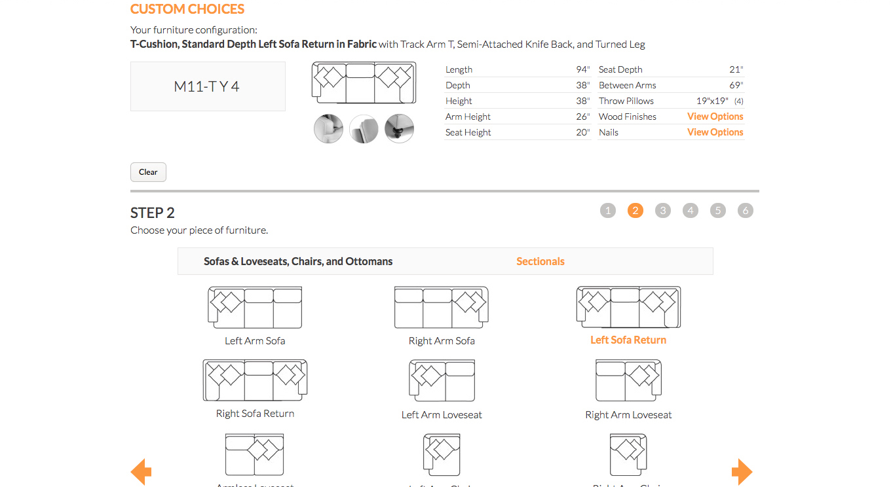
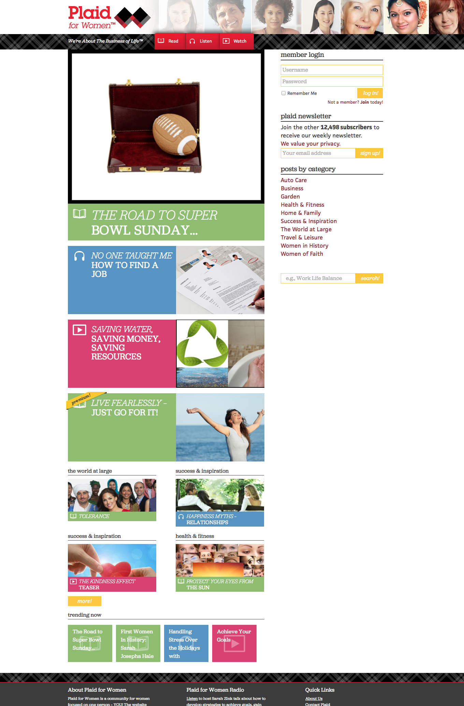
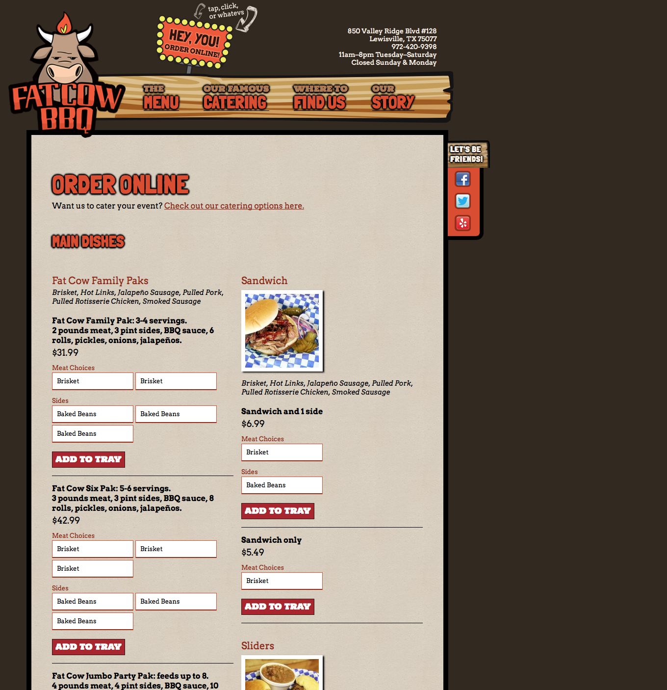
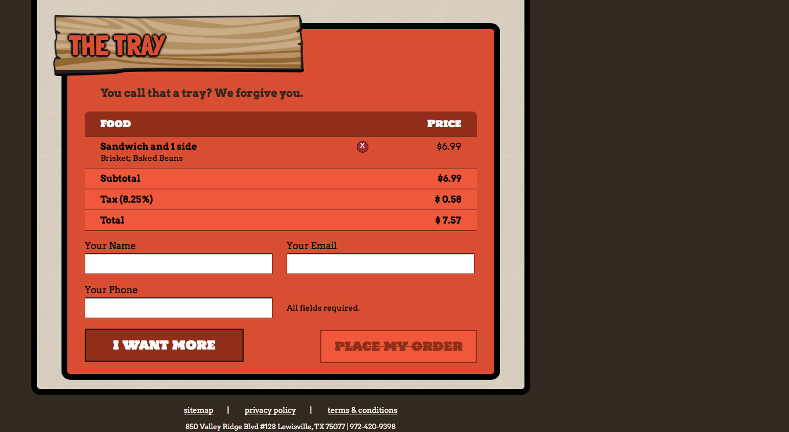
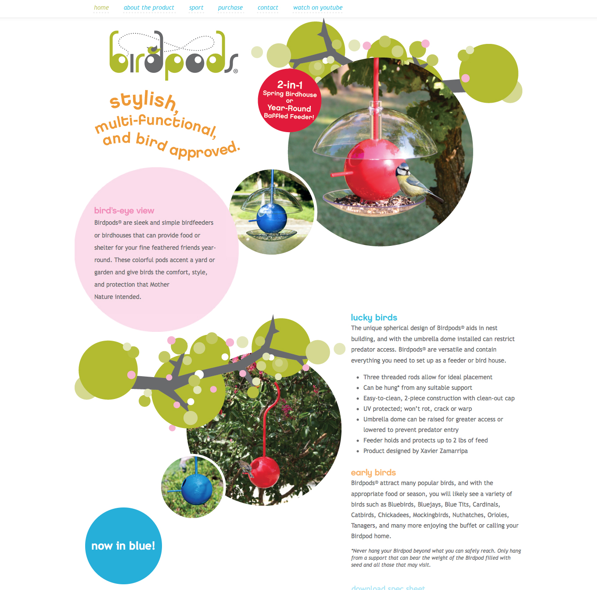

Contact Me
geoff@geoffthibeau.com 504-616-5551 LinkedIn GitHub ResumePortfolio
The websites below were created while employed at Propel Group.
Massoud Furniture
Inventory management was essential for this furniture manufacturer with over four hundred frames and well over eight hundred fabrics and leathers, each with its own set of specifications and related items. The site is responsive and built on WordPress using custom post types, custom taxonomies, custom meta fields, custom media fields, custom profile fields, custom short codes, and a variety of plugins. Lato was chosen as the typeface for its many weights and unimposing nature to let the inventory shine.
Browsing their inventory features drill-down navigation, a responsive grid, and progressively-enhanced infinite-scroll pagination.
The Custom Choices section was previously twelve PDFs with complicated tables for customers to determine the correct 5+ character code when placing an order. I built an interactive furniture customization tool that guides users through the assembly, providing physical dimensions and the furniture code for placing orders. Recent history is included for all visitors, using sessions, while registered users have the option to save and delete codes to/from their profile.
Plaid for Women
Our client wanted to build a “go-to” online magazine and community for women of all ages, rich with engaging content, audio podcasts, and videos. Exclusive content and community privileges are available with different levels of paid membership.
Leveraging WordPress for the content and bbPress for the community, we provided a comprehensive suite of tools and an aggressive visual style for the client to reach their target demographic. The site features a responsive layout, AJAX-loading content, and a real-time email newsletter subscription count using the Constant Contact API. The site uses aggressive caching and Rackspace’s CDN.
I also created the iconography used throughout the site: book, headphones, and the ubiquitous play button for video.
Shown edited to reflect how the site was delivered. The site’s current visuals have been altered by the client since, but is available here.
Fat Cow BBQ
My contribution to this project was the checkout styling and functionality, as well as some copywriting. The client’s fun-natured spirit allowed for relaxed and personal tones to resonate with its visitors, much like their tasty BBQ.
The menu items are pulled from custom WordPress post types, while the cart is built with PHP using POST and sessions. Upon checkout, the entire order is emailed to the customer and Fat Cow BBQ; budget prohibited direct sales-counter integration.
 Birdpods
This unique product needed a simple and informative website to promote itself. Although not responsive, the fixed-nav single-page layout is a perfect match for this modern birdhouse.
